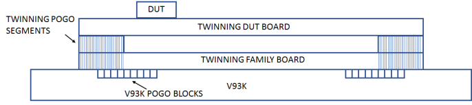
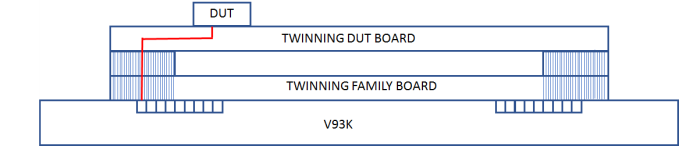
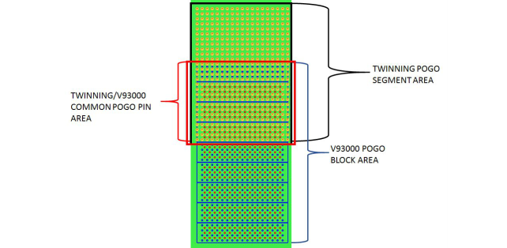
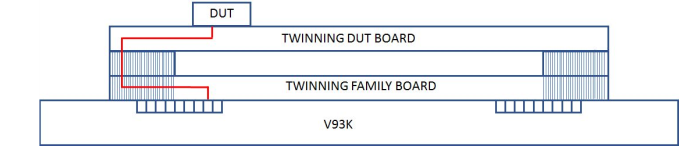
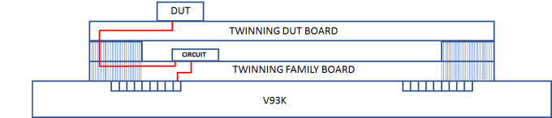

Twinning signal routing
To provide a larger layout space on the DUT board, the Twinning solution works like a space transformer.
The diagram below illustrates this space transformer function. It shows that, in order to increase the layout space on the DUT board, the standard V93000 pogo pin locations needs to be moved to the sides. This is achieved by the Twinning pogo segments. Some V93000 pogo block locations can be routed directly to the Twinning DUT board but other locations will need to be routed in the Twinning family board.

In the example diagram below a V93000 pogo pin location (shown in red) is such that it can be routed directly to the Twinning DUT board. This is the approach with which one achieves the best signal performance but it is only available for some pogo pin locations.

The figure below shows a diagram that super imposes V93000 pogo pin locations with the Twinning pogo segment locations. In red is marked the pogo pins that have a direct path to the Twinning DUT board.

For example, in group 1 only the pogo pin locations 303, 104 and 304 and utility 2 have a common pin area with the Twinning pogo segment.
If the pogo pin is not on the common area then it needs to be routed in the Twinning family board as shown in the diagram below.

This signal routing in the Twinning family board has a negative impact on the signal performance (significantly worse than the Twinning pogo segment impact). However, as illustrated in the figure below, a signal from a V93000 channel can be routed first to a circuit in the Twinning family board (for example a jitter attenuator IC) and then the output routed to the Twinning DUT board through the pogo segment.

Functional changes
- Introduced in SmarTest 8.2.0